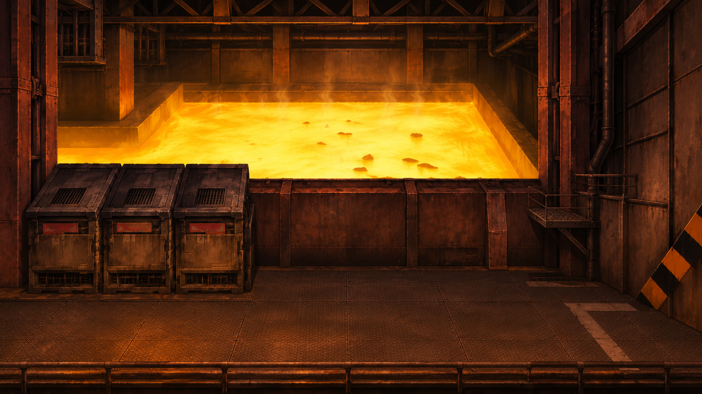

Aperçu indisponible ici.Ouvrir la source avec le lien GitHub ci-dessous.
MGS1 — Blast Furnace
Metal Gear Solid (1998)
Statique · fidélité 1:1 non certifiée · non intégrée au jeu
Références et réserves de revue
Réserves propres à cette source
- Architecture and palette checked against the cited original MGS1 capture/map.
- Side-on combat composition is a painted HD adaptation; original camera, dimensions and hidden geometry are not reproduced pixel-for-pixel.
- Single static background source; no parallax layers, collision layout or runtime admission in this pass.